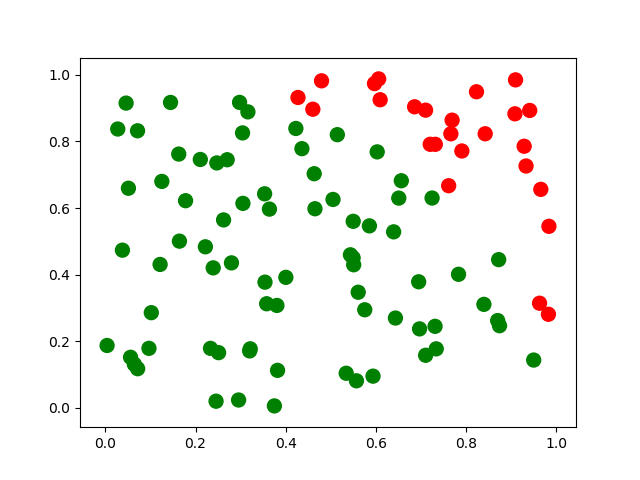

https://en.wikipedia.org/wiki/Monte_Carlo_method
https://en.wikipedia.org/wiki/Markov_chain_Monte_Carlo
https://en.wikipedia.org/wiki/Metropolis%E2%80%93Hastings_algorithm
'Monte Carlo methods' are a broad class of computational algorithms that rely on repeated random sampling to obtain numerical results. The underlying concept is to use randomness to solve problems that might be deterministic in principle. Monte Carlo methods are mainly used in three problem classes: optimization, numerical integration, and generating draws from a probability distribution.
Monte Carlo methods vary, but tend to follow a particular pattern:
(1) Define a domain of possible inputs.
(2) Generate inputs randomly from a probability distribution over the domain.
(3) Perform a deterministic computation on the inputs.
(4) Aggregate the results.

Monte Carlo method applied to approximating the value of pi.
(1) Draw a unit square, then inscribe a quadrant within it.
(2) Uniformly scatter a given number of points over the square.
(3) Count the number of points inside the quadrant.
(4) The ratio of the inside-count and the total-sample-count
is an estimate of the ratio of the two areas, pi/4.
Multiply the result by 4 to estimate pi.
Uses of Monte Carlo methods require large amounts of random numbers, and typically pseudorandom number generators are used.
Markov chain Monte Carlo (MCMC) methods comprise a class of algorithms for sampling from a probability distribution. By constructing a Markov chain that has the desired distribution as its equilibrium distribution, one can obtain a sample of the desired distribution by recording states from the chain. Various algorithms exist for constructing chains, including the Metropolis-Hastings algorithm.
Warning. The random samples used in MCMC are autocorrelated.
The Metropolis-Hastings algorithm is a Markov chain Monte Carlo (MCMC) method for obtaining a sequence of random samples from a probability distribution from which direct sampling is difficult. This sequence can be used to approximate the distribution (e.g. to generate a histogram) or to compute an integral (e.g. an expected value).
The Metropolis-Hastings algorithm can draw samples from any probability distribution P(x), provided that we know a function f(x) proportional to the density of P(x) and the values of f(x) can be calculated. The algorithm works by generating a sequence of sample values in such a way that, as more and more sample values are produced, the distribution of values more closely approximates the desired distribution P(x). These sample values are produced iteratively, with the distribution of the next sample being dependent only on the current sample value. Specifically, at each iteration, the algorithm picks a candidate for the next sample value based on the current sample value. Then, with some probability, the candidate is either accepted or rejected. The probability of acceptance is determined by comparing the values of the function f(x) of the current and candidate sample values with respect to the desired distribution P(x).
Problem: the samples are correlated. We have to throw away the majority of samples and only take every nth sample, for some value of n.
Problem: the initial samples may depend on the initial point. A 'warmup' period is typically necessary, where an initial number of samples are thrown away.